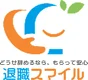
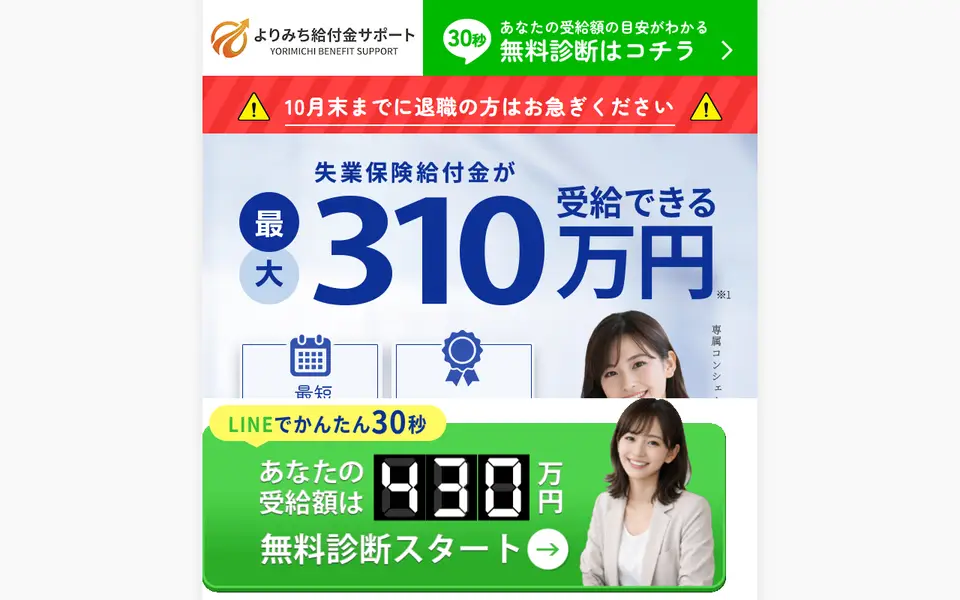
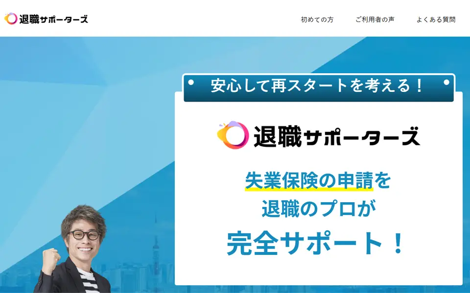
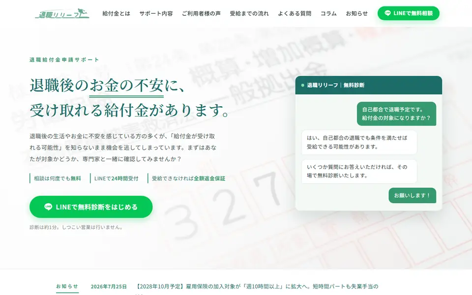
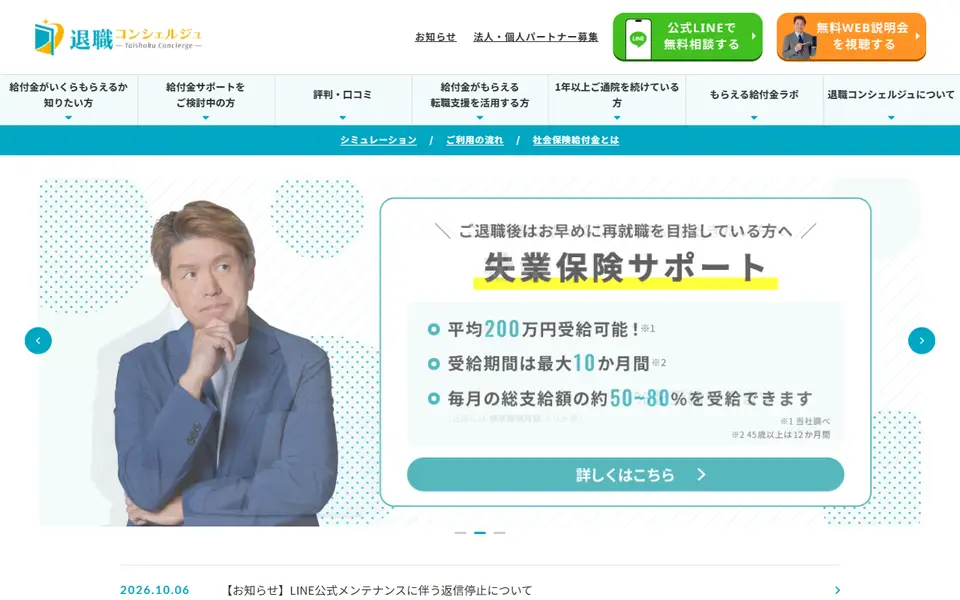
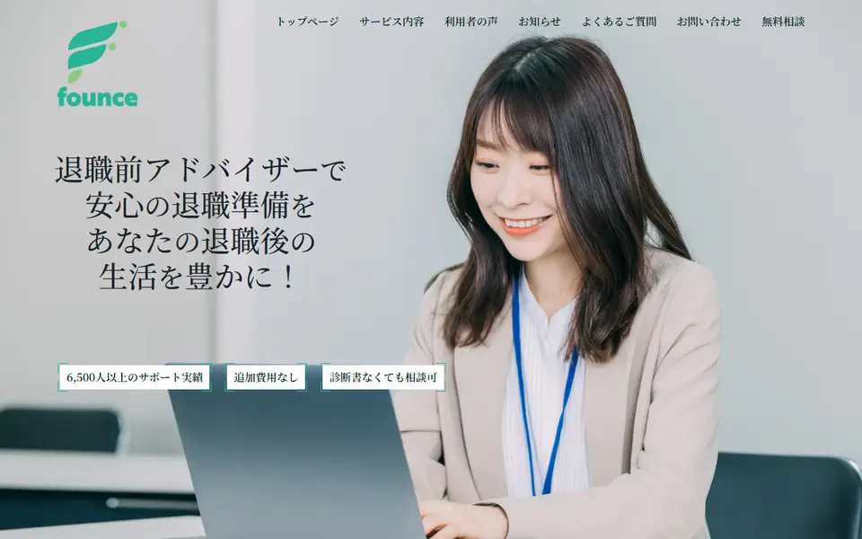

【最新】
会社を辞めようか迷っている方へ 最大310万円受け取れる制度をご存じですか？ 在職中から相談OK 自己都合でもOK LINEで無料診断

PR本ページはアフィリエイト広告を含みます。
もらえる日数が、条件しだいで90日〜360日まで変わるんです。
でも、コツを知っているプロに教わるのとでは大違いなんです。
在職中でも、自己都合でも相談OK
プロに無料で聞いてみる（LINE診断）ひとりで申請する場合と
コンシェルジュと進める場合
| ひとりで申請 | よりみちのコンシェルジュと進める | |
|---|---|---|
| もらえる日数の区分 | 制度を自分で調べて判断する | 今の状況を聞いたうえで、当てはまる条件と受給までの流れを説明してくれる |
| 準備を始める時期 | 辞めてから調べ始めることが多い | 在職中から。退職予定日の1か月前の相談がおすすめ |
| 書類 | 何が必要か自分で調べてそろえる | 必要な書類の準備と申請をサポートしてくれる |
| わからないとき | ハローワークの窓口（開庁時間内） | LINEで24時間受付 |
| 費用 | 無料 | サポート料金あり個別相談で提示 |
ひとりでやると損しやすい3つの理由
理由1同じ人でも、もらえる日数が3倍以上ちがう
失業保険の「もらえる日数」は人によってちがい、90日の人もいれば300日以上の人もいます。
どの日数になるかは、辞めた理由などで分けられた「区分」で決まります。ハローワークは、会社が書いた辞めた理由と、あなたの申し出の両方を見て判断します。
何も知らずに手続きすると、あなたの事情が伝わらないまま進んでしまうことがあります。
1日あたり5,632円の人なら
- 90日だと 約51万円
- 300日だと 約169万円
※公式サイト掲載の事例（34歳・製造業）の金額で計算
理由2辞める日が1日ちがうだけで、約17万円の差
雇用保険に入っていた期間が「9年11か月」で辞めると90日。「10年」まで待てば120日。
1か月ちがうだけで、もらえる日数が30日も変わります。1日あたり5,632円なら、約17万円です。
ほかにも、自己都合で辞めると最初の1か月はもらえません。でも、辞める前の1年以内に対象の講座を受けておけば、この1か月の待ちがなくなります。
どちらも、辞めた後では手遅れです。だから、辞める日を決める前に聞いておくことが大事です。
自己都合で辞める場合
- 9年11か月で辞める → 90日
- 10年で辞める → 120日（30日分多い）
理由3求人サイトを毎日見ても「活動0回」
失業保険は、もらい始めた後も4週間に1回ハローワークに行き、「仕事を探しました」と報告します。
報告には、原則2回以上の求職活動が必要です。ところが、求人サイトを見ていただけでは、1回にも数えられません。数えられるのは、求人への応募や職業相談などです。
こういう細かいルールを最初にまとめて教えてもらえるかどうかで、つまずき方が変わります。
コンシェルジュと進めた人の
受給事例
横にスクロールできます
※よりみち給付金サポート公式サイト掲載の事例。写真はイメージです。
 30代女性
30代女性忙しくて諦めかけていたけれど、プロに頼んだことでしっかり受給できた。対応が早く、家計のやりくりも楽になった。
※公式サイト掲載の声を要約。個人の感想です。
相談だけでも大丈夫です。
LINEの無料診断でわかること
- 自分が受け取れそうな金額の目安
- 受け取りまでの流れと、辞める前にやること
- 自己都合で辞める場合の進め方
在職中でも、自己都合でも相談できます
まずはLINEで受給額を無料診断ほかの申請サポートとも、比べてから決めたいな…
そんな人のために、申請サポート6社を5つの項目で採点しました。
退職前に相談できる
申請サポートBEST3
失業保険の申請サポート
6社を比較
| サービス | 退職前の 相談 | 編集部のひとこと | 公式 |
|---|---|---|---|
| 1よりみち 給付金サポート★★★★★総合評価 4.8 | ◎1か月前 を推奨 | 在職中から相談できる。LINEで無料診断→専属コンシェルジュが受給までの流れを説明。
| 公式 |
| 2退職 サポーターズ★★★★☆総合評価 4.4 | ○退職前 なら可 | 転職サポートもある。申請用の料金は申請前に支払う。
| 公式 |
| 3退職 リリーフ★★★★☆総合評価 4.0 | ○退職前 を推奨 | LINEで24時間受付、診断は約1分。傷病手当金と退職代行にも対応。
| 公式 |
| 4退職 コンシェルジュ★★★★☆総合評価 3.6 | △時期の 案内なし | 2016年からの運営。説明動画→アンケート→面談の順に進む。受給できなければ全額返金と記載。
| 公式 |
| 5退職前 アドバイザー★★★☆☆総合評価 3.0 | △時期の 案内なし | 傷病手当金にも対応。相談はZoomか電話。LINEの記載はない。
| 公式 |
| 6退職 スマイル★★★☆☆総合評価 2.8 | ○退職前の 人が対象 | LINEで無料診断。監修者・運営会社の記載はトップページにない。
| 公式 |
| サービス | 在職中から | 自己都合 | 最初の窓口 | 受付時間 |
|---|---|---|---|---|
| よりみち | ◎1か月前の相談を推奨 | ◎使えると明記 | LINEの無料診断 | ◎24時間 |
| 退職サポーターズ | ○退職前なら可 | 記載なし | LINEの無料診断 | 記載なし |
| 退職リリーフ | ○退職前を推奨 | 記載なし | LINEの無料診断 | ◎24時間 |
| 退職コンシェルジュ | 記載なし | 記載なし | 説明動画の視聴 | 記載なし |
| 退職前アドバイザー | 記載なし | 記載なし | 電話・Zoom | 記載なし |
| 退職スマイル | ○退職前の方が対象 | 記載なし | LINEの無料診断 | 記載なし |
| サービス | 失業保険 | 傷病手当金 | 退職代行 | 転職支援 | 弁護士・社労士 |
|---|---|---|---|---|---|
| よりみち | ◎ | － | － | － | ◎弁護士法人が監修 |
| 退職サポーターズ | ○ | － | － | ○ | ◎顧問弁護士 |
| 退職リリーフ | ○ | ○ | ○ | － | ○社労士が監修 |
| 退職コンシェルジュ | ○ | ○ | ○提携先の紹介 | ○ | ○法律事務所が監修 |
| 退職前アドバイザー | ○ | ○ | － | － | △表記が2通り |
| 退職スマイル | ○ | － | － | － | － |
※各社公式サイトの記載（2026年10月19日確認）。評価は採点基準による
辞める前に、受給額の目安がわかる
無料診断を公式で見るひと目でわかる
6社の位置
- ✔ 退職予定日の1か月前の相談を推奨
- ✔ LINEで24時間受付・まず無料診断
※配置は採点基準の点数による
サポートって、料金はどれくらいかかるんだろう…
支給を決めるのはハローワークで、申請するのは本人です。どこに頼むにしても、申し込む前にこの2つは確かめておきましょう。
申し込む前に確かめる2つ
- サポート料金の総額と、払うタイミング（公式サイトに金額を載せていない会社がほとんどです）
- 返金や解約の条件（書面で確認）
失業保険の申請サポート
おすすめランキング
申請は1回だけ。
どこに頼めばいいんだろう…
失業保険の申請は、いくつも申し込むものではありません。辞める前に相談しやすく、流れを最初に説明してくれる1社を選びましょう。
1よりみち給付金サポート
辞める前に相談できる！
LINEで受給額を無料診断

在職中でも、自己都合でも相談OK
無料診断を公式で見る特徴
- 失業保険は最大310万円
- 条件を満たせば、退職後最短1か月で受給開始
- LINEは24時間受付。全てオンラインで全国対応
- 専属コンシェルジュが受給までの流れを説明
- 弁護士法人プロテクトスタンスが監修
※編集部の採点（基準）
| 相談方法 | 相談の時期 |
|---|---|
| LINE（24時間受付）・オンライン個別相談（全国） | 退職予定日の1か月前がおすすめ（有休消化中でも可） |
| 監修 | 運営 |
| 弁護士法人プロテクトスタンス 代表弁護士 五十部紀英 | 株式会社よりみち（東京都中央区日本橋室町） |
| 受給までの流れ | 料金 |
| 友だち追加→無料診断→個別相談→書類準備・申請→認定日後 約1〜2週間で振込 | 個別相談で提示（申し込む前に確認） |
横にスクロールできます
編集部のイチオシポイント
相談の時期を「退職予定日の1か月前」と具体的に案内しているのは、6社の公式サイトで見たかぎり、よりみち給付金サポートだけでした。LINEは24時間受付で、まず無料診断で受給額の目安がわかります。その後は専属のコンシェルジュが、受給までの流れを説明してくれます。辞める日を決める前に、ひとりで抱えずに聞けるのが、いちばんの強みです。
よりみち給付金サポートの口コミ
- 40代男性
失業保険は少額だと思っていたが、相談して、条件しだいで手厚いと知った。正しい知識が、次の行動の後押しになった。
- 30代女性
忙しくて諦めかけていたが、頼んだことで受給できた。対応が早く、家計が楽になった。
- 30代男性
離職後の生活が心配だったが、受け取れて気持ちが楽になった。焦らずに次の仕事を選べた。
※公式サイト掲載の声を要約。個人の感想です。
【気になる点】サポート料金は公式サイトに載っていません。個別相談で金額を聞いてから決めましょう。
こちら
自己都合の退職でも使えます
無料診断を公式で見る2退職サポーターズ
顧問弁護士の氏名を公開！
転職サポートもセット

特徴
- LINE・電話・オンライン面談で相談できる
- 顧問弁護士 中野秀俊（グローウィル国際法律事務所）
- 転職サポートもある
- ハローワークの審査後、約1〜2週間で振込
- 申請用の料金は申請前に支払う
※編集部の採点（基準）
| 運営 | 相談方法 |
|---|---|
| 株式会社Transfer | LINE・電話・オンライン面談 |
| 料金 | 返金 |
| 面談で案内。申請前に支払う | 申請が通らなければ返金（会社に過失がない場合は対象外） |
編集部のひとこと
転職サポートまでまとめて頼みたい人向けです。弁護士の名前まで公開しています。一方で、申請用の料金を申請前に払う仕組みなので、金額と返金の条件は面談で確かめましょう。
3退職リリーフ
LINEで24時間受付！
傷病手当金・退職代行も相談できる

特徴
- 失業手当・傷病手当金・退職代行に対応
- LINEの診断は約1分
- 受給できなければ全額返金と記載
- 社会保険労務士 三井貴仁が監修
- 運営会社はトップページに記載なし
※編集部の採点（基準）
| 相談方法 | 受付時間 |
|---|---|
| LINE | 24時間 |
| 対応 | 運営 |
| 失業手当・傷病手当金・退職代行 | 特定商取引法の表記で確認 |
編集部のひとこと
体調を崩していて、傷病手当金や退職代行も一緒に相談したい人向けです。
4退職コンシェルジュ
2016年から運営！
受給できなければ全額返金

特徴
- 失業保険・再就職手当・傷病手当金に対応
- 転職支援、退職代行の紹介もある
- スピネル法律事務所が監修
- 口コミ評価4.42026年10月現在・公式
- 説明動画の視聴→アンケート→面談の順で進む
※編集部の採点（基準）
| 運営 | 相談方法 |
|---|---|
| CREED BANK株式会社 | LINE・WEB説明会・面談 |
| 返金 | 対応 |
| 受給できなければ全額返金と記載 | 失業保険・傷病手当金・転職支援 |
編集部のひとこと
運営歴と返金保証を重視する人向けです。最初に説明動画を見る手順があるので、すぐに相談したい人には少し遠回りです。
5退職前アドバイザー
傷病手当金もまとめて相談！
顔出しなしの面談もOK

特徴
- 傷病手当・失業手当・再就職手当に対応
- Zoomか電話で個別面談（顔出しなしも可）
- 顧問弁護士あり（第一東京弁護士会）
- LINEでの相談の記載なし
※編集部の採点（基準）
| 運営 | 相談方法 |
|---|---|
| 株式会社founce | Zoom・電話 |
| 対応 | 支払い |
| 傷病手当・失業手当・再就職手当 | 前払い・クレジットカード |
編集部のひとこと
電話やZoomで話して決めたい人向けです。実績の人数が、ページ内で2通り（6,500人以上／4,500名以上）書かれています。
6退職スマイル
LINEで無料診断！
友だち追加は30秒
※編集部の採点（基準）
| 相談方法 | 対応 |
|---|---|
| LINE | 失業保険 |
| 運営 | 監修 |
| トップページに記載なし | トップページに記載なし |
編集部のひとこと
LINEで手早く診断したい人向けです。「3冠」とありますが、調査元は書かれていません。
迷ったらまずは
ここに聞けば安心！
よりみち給付金サポート
辞める前に、LINEで受給額の目安がわかります。自己都合でも相談OK。
在職中でも相談OK
無料診断を公式で見る